Aplicar padrões de projeto conforme especificações técnicas do projeto.
Vamos iniciar os estudos!
PlayComo resolver problemas de software usando os padrões criacionais?
Padrões de projeto, ou design patterns, representam um conjunto de práticas consagradas destinadas a resolver dilemas frequentemente encontrados no desenvolvimento de software. Especialmente dentro da indústria de jogos digitais, esses padrões fornecem um esquema estratégico para a construção e manutenção de um código robusto e maleável. Os padrões de criação, em particular, oferecem métodos para instanciar objetos de maneira controlada, otimizando a utilização de recursos e a flexibilidade do código em jogos complexos.
Esses padrões criacionais são fundamentais para o desenvolvimento de jogos, pois permitem aos desenvolvedores concentrar-se na lógica de jogo central, enquanto detalhes como a criação de objetos são gerenciados de maneira eficiente e sistemática. Com padrões como Singleton, Factory, Abstract Factory, Builder e Prototype, os criadores de jogos podem modularizar seu código, facilitando a expansão, manutenção e aprimoramento contínuos do software, garantindo que a base do jogo seja tanto escalável quanto performática.
Erich Gamma, um dos membros da Gang of Four, grupo que escreveu o livro clássico de Design Patterns, também é conhecido por ser um dos desenvolvedores originais da plataforma Eclipse, um ambiente de desenvolvimento integrado (IDE) amplamente utilizado para programação Java.
Na imagem a seguir, apresentamos um resumo dos cinco padrões de projeto criacionais.
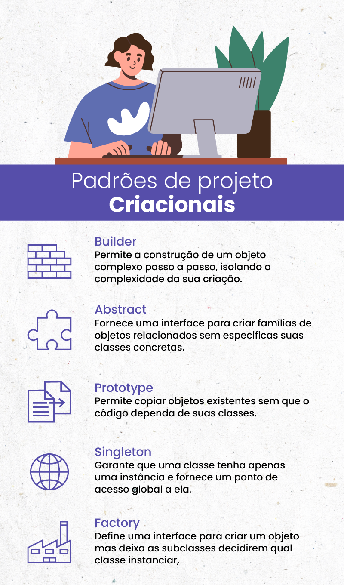QUESTÃO 1
Qual dos seguintes padrões de projeto NÃO é um padrão criacional?
Nesta aula, veremos os padrões criacionais, o Singleton e o Factory. Acompanhe os exemplos e faça as atividades para fortalecer o conhecimento adquirido.
O padrão de design Singleton é uma técnica usada na programação para garantir que uma classe tenha apenas uma única instância em todo o programa, com um ponto de acesso global a essa instância. Isso é útil quando se precisa de um controle rigoroso sobre como e quando um recurso é acessado e compartilhado.
Por exemplo, a configuração de um aplicativo muitas vezes é gerenciada por um objeto Singleton, pois geralmente existe apenas um conjunto de configurações que deve ser acessível de forma consistente por diferentes partes do sistema. Implementar um Singleton envolve definir uma classe que impede a criação de múltiplas instâncias e também fornece um método estático que dá acesso à única instância criada.
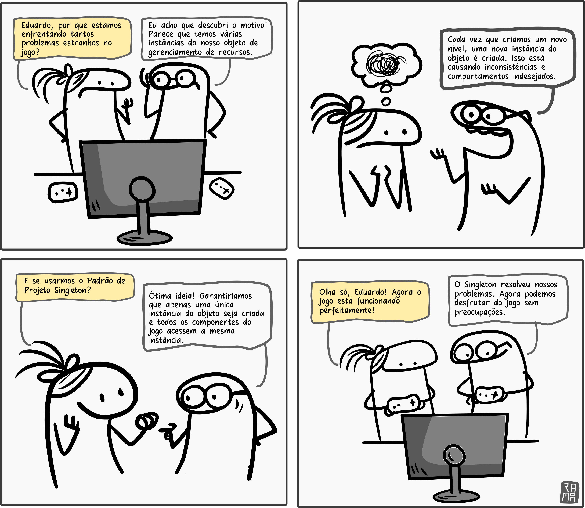No desenvolvimento de jogos, o padrão Singleton é frequentemente utilizado para gerenciar componentes do jogo que são únicos, como o gerenciador de estados do jogo ou o sistema de controle de áudio. Por exemplo, pode haver uma necessidade de uma única fonte de verdade para o estado atual do jogo, garantindo que todos os elementos do jogo estejam sincronizados. Um objeto Singleton pode manter o score, as vidas do jogador, ou as configurações do jogo, permitindo que esses dados sejam facilmente acessados e modificados de forma controlada por diferentes scripts e cenas. Isso ajuda a evitar conflitos e erros que poderiam surgir se múltiplas instâncias desses componentes críticos fossem criadas e usadas inadvertidamente.
Você já jogou um jogo onde existe apenas um personagem principal ou herói? Como o Super Mario, por exemplo. Não importa quantas vezes você jogue, sempre há apenas um Mario. Você pode jogar diferentes níveis, coletar moedas, mas no final do dia, ainda é o mesmo Mario. Você não pode criar um novo Mario, mesmo que tente.
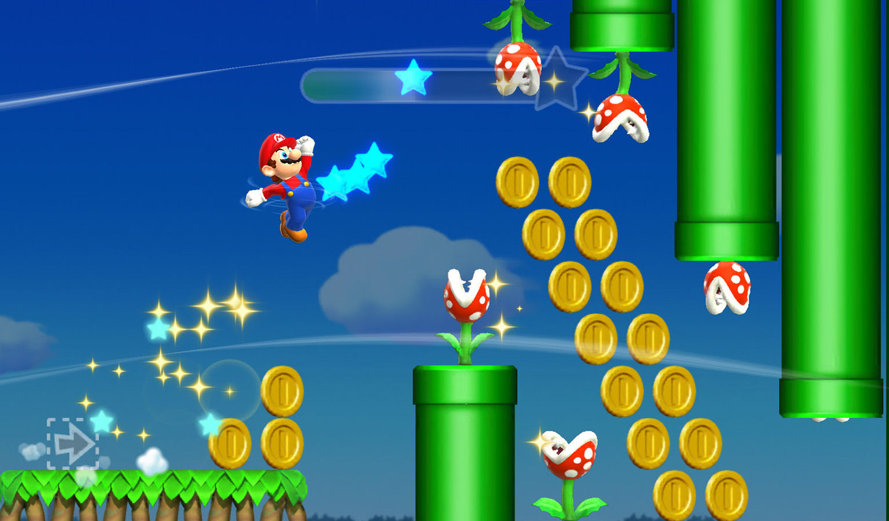No mundo da programação, temos algo parecido chamado Padrão Singleton. É como o Mario em seu jogo. Quando usamos o Padrão Singleton, estamos dizendo que só pode haver um único objeto de um determinado tipo em todo o nosso programa, assim como só pode haver um Mario no jogo.
Então, quando precisamos de um objeto que deve ser único e acessível de qualquer lugar do nosso código - como um gerenciador de configurações, por exemplo - usamos o Padrão Singleton. É como se o nosso programa fosse um grande jogo, e o Singleton é o nosso Mário, sempre lá quando precisamos dele.
Para exemplificar, vamos pensar em um jogo de vôlei. Como você sabe, só é permitida uma bola na quadra. Seria muito confuso se tivesse mais de uma bola, não é mesmo? Para garantir que só terá uma bola instanciada no momento da partida, vamos implementar o padrão Singleton, da seguinte forma:
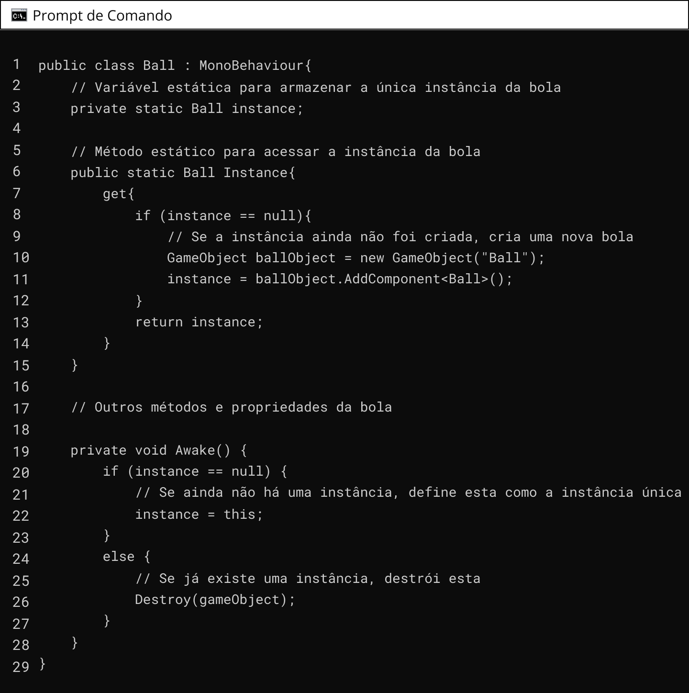A classe Ball representa a bola do jogo de vôlei. Aqui, o padrão Singleton é implementado usando uma variável estática instance que armazena a única instância da bola. O método estático Instance é usado para acessar essa instância.
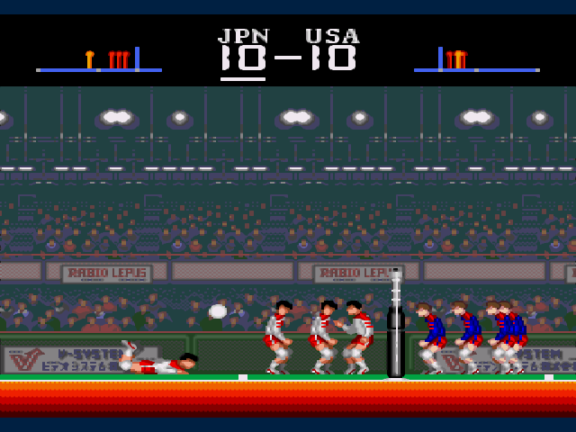No método Awake(), verificamos se já existe uma instância da bola. Se não existir, definimos a instância atual como a instância única. Caso contrário, se já existir uma instância, destruímos o objeto atual para garantir que apenas uma bola seja criada por partida.
Dessa forma, em qualquer parte do jogo que precisarmos acessar a bola, basta chamar Ball.Instance para obter a instância única da bola. Isso garante que apenas uma bola seja instanciada e utilizada durante toda a partida de vôlei.
QUESTÃO 2
Avalie se a afirmação a seguir é verdadeira ou falsa.
O Padrão Singleton garante que uma classe tenha apenas uma instância e fornece um ponto de acesso global a ela.
O padrão de design Factory, especificamente o Factory Method, é um padrão criacional que define uma interface para criar um objeto, mas deixa que as subclasses decidam qual classe concretizar, adiando a instanciação para as subclasses. Isso permite que o código que utiliza a fábrica seja independente das classes concretas que serão criadas, promovendo a flexibilidade e a reutilização do código. O padrão é particularmente útil quando um sistema precisa ser expandido em termos de famílias de produtos, e quando as classes de produtos são projetadas para serem usadas em conjunto, garantindo assim que os clientes usem apenas produtos da mesma família.
Você já jogou um jogo como Minecraft ou Fortnite, onde você pode criar diferentes itens usando um menu de criação? Você escolhe o tipo de item que quer criar, e o menu cuida do resto, certo? Ele sabe como criar cada tipo de item, seja uma espada, uma poção ou um bloco de construção.
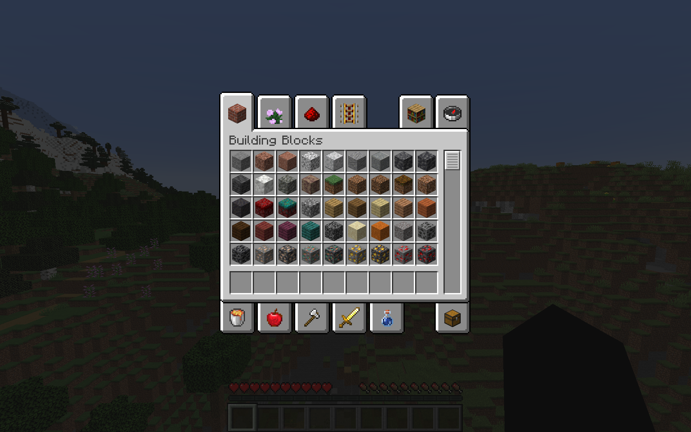O Padrão Factory age como o menu de criação do seu jogo. Quando usamos o Padrão Factory, estamos basicamente criando um "menu" que sabe como criar diferentes tipos de objetos para nós.
Digamos que estamos programando um jogo e temos diferentes tipos de inimigos. Em vez de criar cada inimigo individualmente, podemos usar um Factory para fazer isso. Nós apenas dizemos ao Factory que tipo de inimigo queremos, e ele cria para nós. Isso torna nosso código mais organizado e mais fácil de gerenciar. Outro bom exemplo é o jogo Plants vs Zombies. No qual hordas de zumbis com poderes diferentes avançam sobre as defesas da casa do player que é feita por plantas.
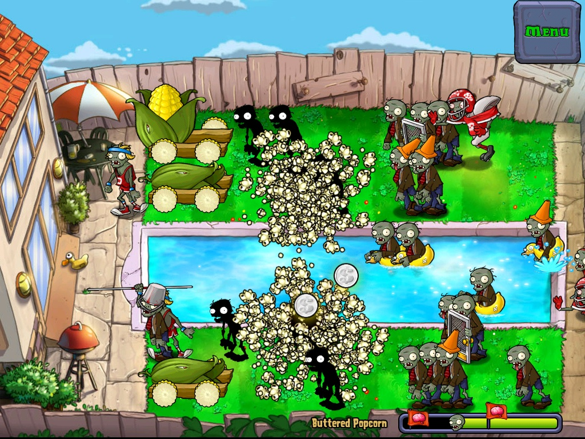O padrão de projeto Factory pode ser usado em jogos para criar objetos de forma flexível e encapsulada, permitindo a criação de diferentes tipos de objetos de forma centralizada.
Para a implementação desta aula, imagine um jogo de estratégia onde o jogador pode recrutar diferentes tipos de unidades militares, como soldados, arqueiros e cavaleiros. Em vez de criar cada unidade diretamente no código do jogo, podemos usar o padrão Factory para criar as unidades de forma mais modular. Vamos lá!
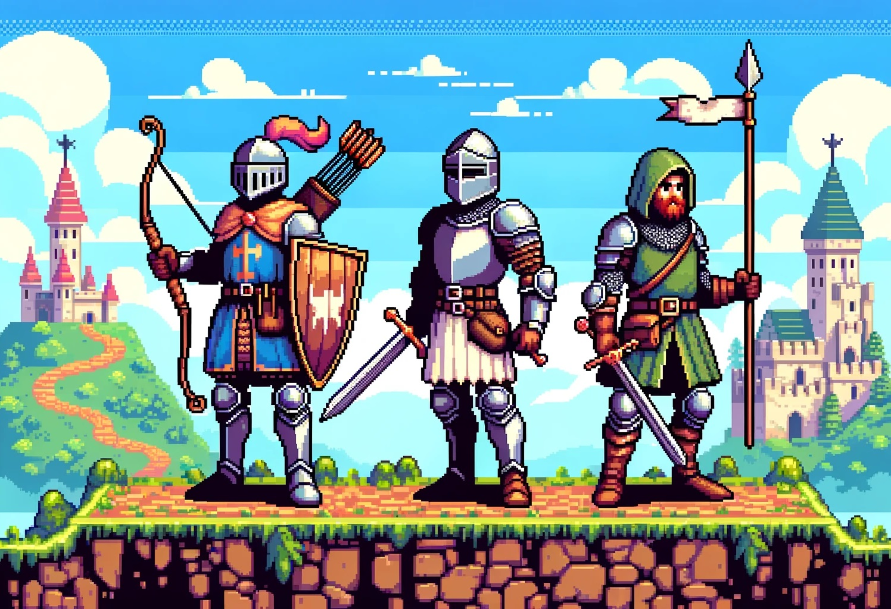Para isso, podemos ter uma classe abstrata chamada Unit que define a interface comum para todas as unidades e subclasses concretas, como Soldier, Archer e Knight, que implementam os detalhes específicos de cada tipo de unidade.
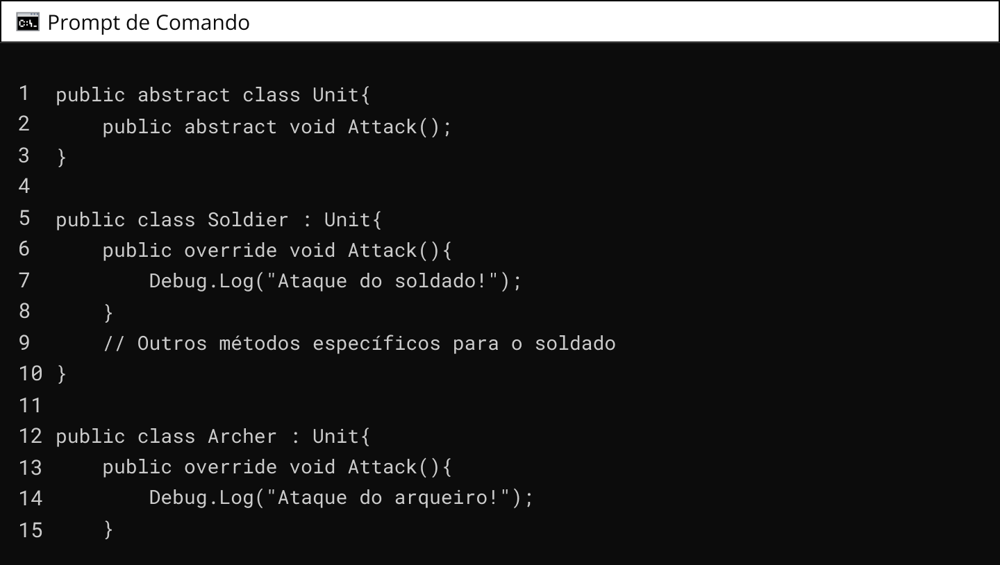 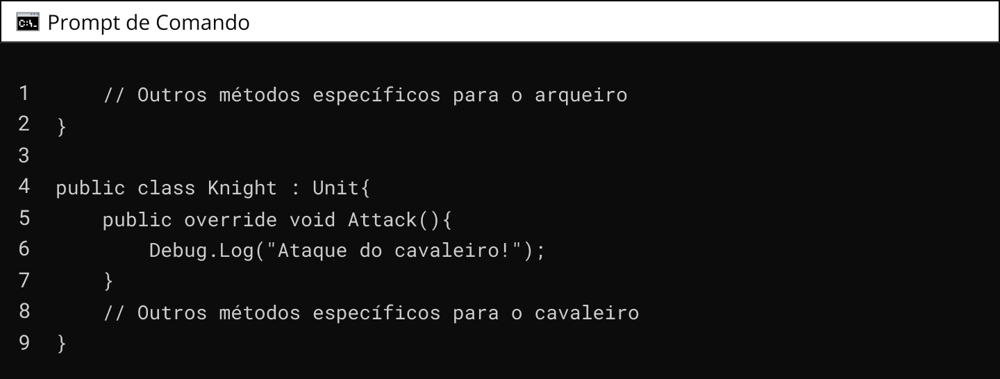Em seguida, devemos criar uma classe UnitFactory que contém um método de fábrica, por exemplo, CreateUnit, que recebe um parâmetro indicando o tipo de unidade a ser criada. Com base nesse parâmetro, a fábrica cria e retorna a instância apropriada da unidade.
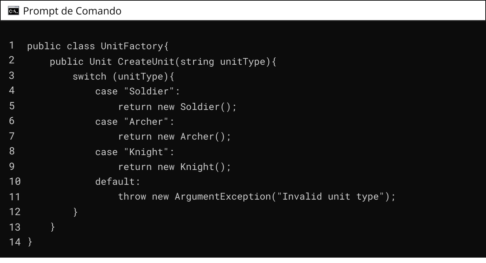No código do jogo, podemos usar a fábrica de unidades (UnitFactory) para criar instâncias das unidades conforme necessário:
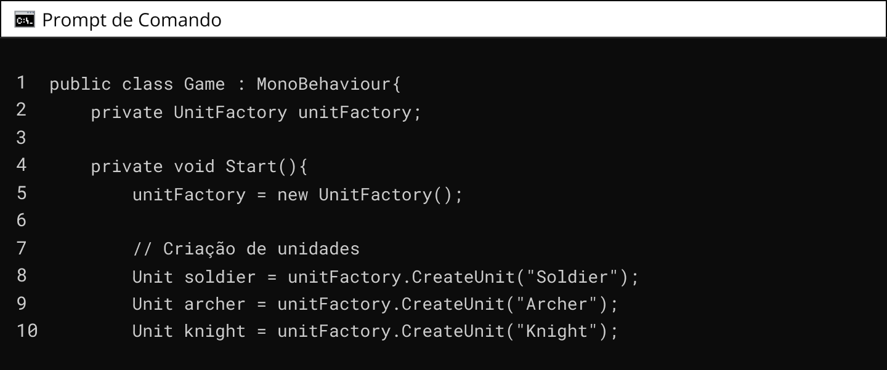 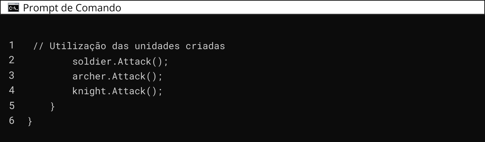O padrão Factory pode ser representado graficamente pelo diagrama de classes a seguir:
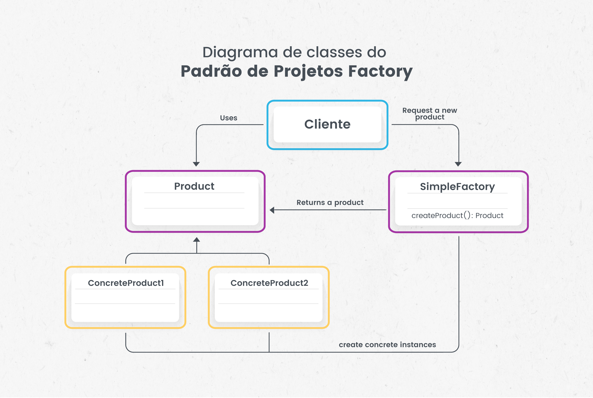QUESTÃO 3
Avalie se a afirmação a seguir é verdadeira ou falsa.
O Padrão Factory é um padrão criacional que usa métodos de fábrica para lidar com o processo de criação de objetos, permitindo que uma classe delegue a instanciamento para subclasses.
Os padrões de projeto são técnicas de programação que proporcionam soluções para problemas comuns no desenvolvimento de software. Eles servem para vários propósitos como reuso de software, facilitar a comunicação entre desenvolvedores, promover o bom design de software, deixar o software mais fácil de manter.